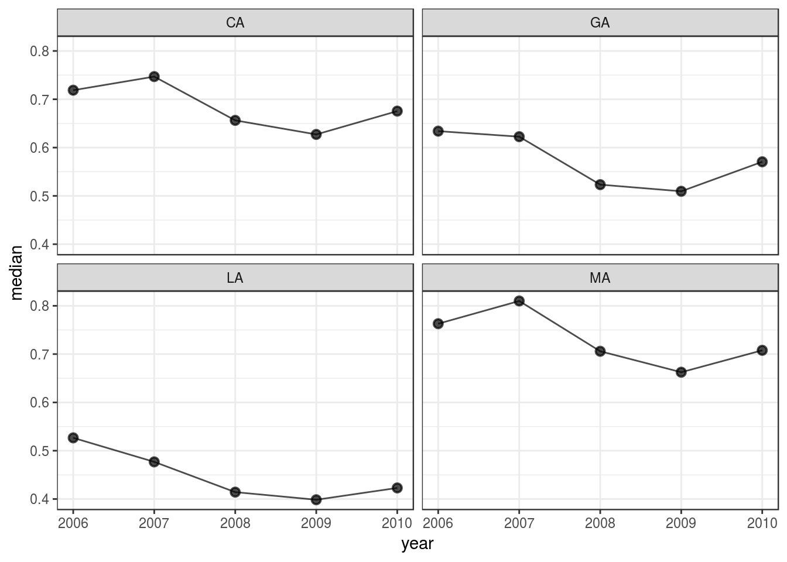

Abortion Attitudes
This vignette demonstrates estimation of public attitudes toward abortion from responses to a single survey item, using the dynamic multi-level regression and post-stratification (MRP) model implemented in dgmrp().
Prepare input data
shape() prepares input data for use with the modeling functions dgirt() and dgmrp(). Here we use the included opinion dataset.
dgirt_in_abortion <- shape(opinion, item_names = "abortion", time_name = "year",
geo_name = "state", group_names = "race3", geo_filter = c("CA", "GA", "LA",
"MA"), id_vars = "source")
#> Applying restrictions, pass 1...
#> Dropped 5 rows for missingness in covariates
#> Dropped 633 rows for lacking item responses
#> Applying restrictions, pass 2...
#> No changesIn this call to shape() we specified:
- the survey item response variable (
abortion); - which variable represents time (
year), since dgo models are dynamic; - the variables representing respondent characteristics (
stateandrace3), because dgo models are group-level.
Notice that we named only one of these variables defining respondent groups using the group_names argument. The geo_name argument always takes the variable giving respondents’ local geographic area; it will be modeled differently.
Using the argument geo_filter, we subset the input data to the given values of the geo_name variable. And with the id_vars argument, we named an identfier that we’d like to keep in the processed data. (Other unused variables will be dropped.)
Inspect the result
summary() gives a high-level description of the result.
summary(dgirt_in_abortion)
#> Items:
#> [1] "abortion"
#> Respondents:
#> 23,007 in `item_data`
#> Grouping variables:
#> [1] "year" "state" "race3"
#> Time periods:
#> [1] 2006 2007 2008 2009 2010
#> Local geographic areas:
#> [1] "CA" "GA" "LA" "MA"
#> Hierarchical parameters:
#> [1] "GA" "LA" "MA" "race3other" "race3white"
#> Modifiers of hierarchical parameters:
#> NULL
#> Constants:
#> Q T P N G H D
#> 1 5 5 60 12 1 1get_n() and get_item_n() give response counts.
get_n(dgirt_in_abortion, by = "state")
#> state n
#> 1: CA 14248
#> 2: GA 4547
#> 3: LA 1658
#> 4: MA 2554
get_item_n(dgirt_in_abortion, by = "year")
#> year abortion
#> 1: 2006 5275
#> 2: 2007 1690
#> 3: 2008 4697
#> 4: 2009 2141
#> 5: 2010 9204Fit a model
dgmrp() fits a dynamic multi-level regression and post-stratification (MRP) model to data processed by shape(). Here, we’ll use it to estimate public attitudes toward abortion over time, for the groups defined by state and race3. (Specifically, by their Cartesian product.)
Under the hood, dgmrp() uses RStan for MCMC sampling, and arguments can be passed to RStan’s stan() via the ... argument of dgmrp(). This is almost always desirable. Here, we specify the number of sampler iterations, chains, and cores.
dgmrp_out_abortion <- dgmrp(dgirt_in_abortion, iter = 1500, chains = 4, cores =
4, seed = 42)The model results are held in a dgmrp_fit object. Methods from RStan like extract() are available if needed because dgmrp_fit is a subclass of stanfit. But dgo provides its own methods for typical post-estimation tasks.
Work with results
For a high-level summary of the result, use summary().
summary(dgmrp_out_abortion)
#> dgirt samples from 4 chains of 1500 iterations, 750 warmup, thinned every 1
#> Drawn Mon May 29 23:27:34 2017
#> Package version 0.2.10
#> Model version 2017_01_04_singleissue
#> 117 parameters; 60 theta_bars (year state race3)
#> 5 periods 2006 to 2010
#>
#> n_eff
#> Min. 1st Qu. Median Mean 3rd Qu. Max.
#> 95.68 242.50 451.87 685.85 927.30 3000.00
#>
#> Rhat
#> Min. 1st Qu. Median Mean 3rd Qu. Max.
#> 0.9993 1.0028 1.0068 1.0081 1.0126 1.0406
#>
#> Elapsed time
#> chain warmup sample total
#> 1: 1 15S 16S 31S
#> 2: 2 15S 11S 26S
#> 3: 3 15S 19S 34S
#> 4: 4 16S 10S 26STo apply scalar functions to posterior samples, use summarize(). The default output gives summary statistics for the model’s theta_bar parameters, which represent group means. These are indexed by time (year) and group, where groups are again defined by local geographic area (state) and any other respondent characteristics (race3).
head(summarize(dgmrp_out_abortion))
#> param state race3 year mean sd median q_025
#> 1: theta_bar CA black 2006 0.7739283 0.02098019 0.7749083 0.7307567
#> 2: theta_bar CA black 2007 0.7980027 0.02771553 0.7979378 0.7439328
#> 3: theta_bar CA black 2008 0.7232980 0.02362116 0.7231930 0.6786121
#> 4: theta_bar CA black 2009 0.6863666 0.02128237 0.6863458 0.6463628
#> 5: theta_bar CA black 2010 0.7407779 0.01682742 0.7414667 0.7058706
#> 6: theta_bar CA other 2006 0.7347199 0.02322850 0.7354365 0.6872140
#> q_975
#> 1: 0.8144084
#> 2: 0.8517811
#> 3: 0.7693334
#> 4: 0.7279652
#> 5: 0.7717651
#> 6: 0.7790182Alternatively, summarize() can apply arbitrary functions to posterior samples for whatever parameter is given by its pars argument.
summarize(dgmrp_out_abortion, pars = "xi", funs = "var")
#> param year var
#> 1: xi 2006 0.01814362
#> 2: xi 2007 0.05026942
#> 3: xi 2008 0.05606188
#> 4: xi 2009 0.04857038
#> 5: xi 2010 0.04149793To access posterior samples in tabular form use as.data.frame(). By default, this method returns post-warmup samples for the theta_bar parameters, but like other methods takes a pars argument.
head(as.data.frame(dgmrp_out_abortion))
#> param state race3 year iteration value
#> 1: theta_bar CA black 2006 1 0.7661626
#> 2: theta_bar CA black 2006 2 0.7690362
#> 3: theta_bar CA black 2006 3 0.7656257
#> 4: theta_bar CA black 2006 4 0.7935372
#> 5: theta_bar CA black 2006 5 0.7544080
#> 6: theta_bar CA black 2006 6 0.7819740To poststratify the results use poststratify(). Here, we use the group population proportions bundled as annual_state_race_targets to reweight and aggregate estimates to strata defined by state-years.
poststratify(dgmrp_out_abortion, annual_state_race_targets, strata_names =
c("state", "year"), aggregated_names = "race3")
#> state year value
#> 1: CA 2006 0.7187353
#> 2: CA 2007 0.7469064
#> 3: CA 2008 0.6562966
#> 4: CA 2009 0.6272075
#> 5: CA 2010 0.6754691
#> 6: GA 2006 0.6339750
#> 7: GA 2007 0.6225482
#> 8: GA 2008 0.5232615
#> 9: GA 2009 0.5095145
#> 10: GA 2010 0.5705449
#> 11: LA 2006 0.5266416
#> 12: LA 2007 0.4769044
#> 13: LA 2008 0.4142786
#> 14: LA 2009 0.3985367
#> 15: LA 2010 0.4229707
#> 16: MA 2006 0.7629194
#> 17: MA 2007 0.8099707
#> 18: MA 2008 0.7058450
#> 19: MA 2009 0.6624888
#> 20: MA 2010 0.7078342To plot the results use dgirt_plot(). This method plots summaries of posterior samples by time period. By default, it shows a 95% credible interval around posterior medians for the theta_bar parameters, for each local geographic area. Here we omit the CIs.
dgirt_plot(dgmrp_out_abortion, y_min = NULL, y_max = NULL)
dgirt_plot() can also plot the data.frame output from poststratify(), given arguments that identify the relevant variables. Below, we aggregate over the demographic grouping variable race3, resulting in a data.frame of estimates by state-year.
ps <- poststratify(dgmrp_out_abortion, annual_state_race_targets, strata_names =
c("state", "year"), aggregated_names = "race3")
head(ps)
#> state year value
#> 1: CA 2006 0.7187353
#> 2: CA 2007 0.7469064
#> 3: CA 2008 0.6562966
#> 4: CA 2009 0.6272075
#> 5: CA 2010 0.6754691
#> 6: GA 2006 0.6339750
dgirt_plot(ps, group_names = NULL, time_name = "year", geo_name = "state")
In the call to dgirt_plot(), we passed the names of the state and year variables. The group_names argument was then NULL, because there were no grouping variables left after we aggregated over race3.